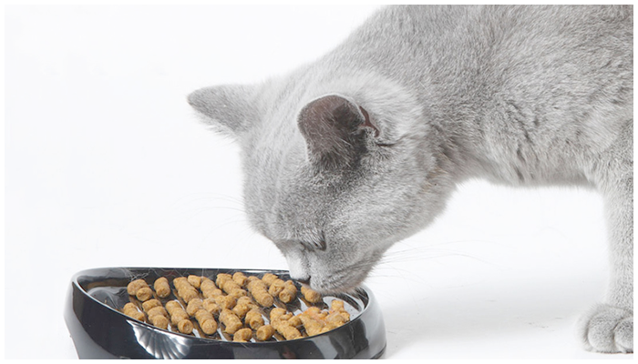

Как правильно кормить кошку?
Ласковое мурлыканье кошки способно растопить самую суровую душу, заставляя улыбаться и думать о хороших, приятных вещах. Миллионы людей, являясь гордыми обладателями представителей семейства кошачьих, рассказывают знакомым, какие у них замечательные «котэ». Фотографий забавных пушистых «мини-тигров» в глобальной сети едва ли не меньше, чем людских. Но будучи поклонником кошек и котов, их счастливые владельцы редко задумываются над разработкой сбалансированной кошачьей диеты.
Разрабатываем оптимальный рацион
Уважаемые владельцы и поклонники кошек! Помните, что кормить пушистого любимца той же едой, что составляет Ваш личный рацион – неправильно. У котов возникнут проблемы с пищеварением, нарушится работа внутренних органов, а дорогостоящее лечение может негативно сказаться на кошачьей психике. Отдавая дань агрессивной рекламе, и выбирая готовый корм, не следует забывать, что дешевые корма, столь усердно расхваливаемые средствами медиа, наполовину состоят из субпродуктов, кожи, костей и перьев. Как следствие, у кошек возникают проблемы с желудком, и развивается привыкание к готовому корму.
Готовые корма - покупать или не покупать?
Готовые корма среднего и элитного класса, пусть и более дорогостоящее удовольствие, но их пищевая ценность наряду с полезностью более высока. Они содержат больше натуральных продуктов и вкусовых добавок, претендуя на звание основы кошачьего рациона. Натуральные диеты должны состоять из мяса, клетчатки (овощей и злаков), в процентном соотношении 75-80% на 25-20%.
Профессиональная поддержка в составлении выверенной кошачьей диеты – одна из специализаций ветеринарной клиники «Baskerville». Обращайтесь к нам, и Ваш питомец станет питаться правильно!
